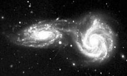

i050801
TROST
InfoNote
System Lifecycle
Collisions
Discussion
|
|
i050801
TROST
InfoNote |
- Latest version: The latest version of this note is available on the Internet at
<http://TROSTing.org/info/2005/08/i050801b.htm>.- This version: 0.06 <http://TROSTing.org/info/2005/08/i050801c.htm>. Consult that page for the latest status and for the most-recent electronic copies of the material.
|
 |
The image of galaxies in collision provides a metaphor for
|
This page is a placeholder for material which is yet to be incorporated. When it is available, this page will be updated to provide further details as well as links for supporting materials.

|
created 2005-08-09-11:57 -0700 (pdt) by
orcmid |